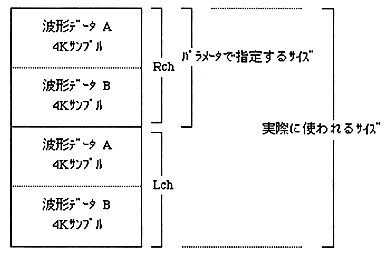
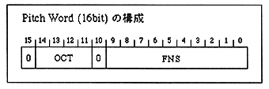

Since the pitch can be up to ± 8 octaves (OCT) and further divided into 1024 steps (FNS) in one octave, any frequency can be supported within this accuracy range. If the sampling frequency is known in advance, calculate the pitch (OCT and FNS values) in advance using the pitch calculation method in the next section. By giving this pitch as a parameter when playing a PCM stream, the frequency at the time of sampling can be reproduced as it is.
